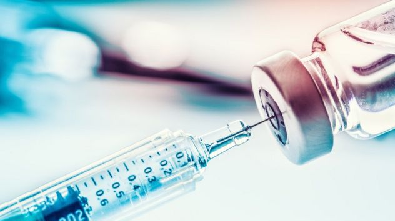

(21) 2767-8175
(21) 2767-8175 celticssaude@gmail.com
celticssaude@gmail.comAlguns meios preventivos para
evitar a propagação da COVID-19
1. Lavar as mãos e usar Alcóol em gel

Lave bem as mãos e com frequência, usando álcool em gel ou água e sabão. Por quê? Lavar as mãos com água e sabão ou usar álcool em gel mata os vírus que podem estar nas suas mãos.
2. Distanciamento
Mantenha uma distância mínima de 1,5 metros entre você e qualquer pessoa que tosse ou espirra. Por quê? Quando alguém tosse ou espirra, gotas de fluido que podem conter o vírus que são liberadas pelo nariz ou pela boca. Se você estiver muito muito perto, pode respirar as gotículas e com elas, o vírus COVID-19.
3. Contatos com a face
Evite tocar nos olhos, nariz e boca.Por quê?
As mãos tocam muitas superfícies e podem
contrair o vírus. Uma vez contaminadas, as
mãos podem transferir o vírus para os olhos,
nariz ou boca. A partir daí o vírus pode entrar
no seu corpo e causar doenças.
4. Uso da máscara
Você e as pessoas ao seu redor devem manter uma
boa higiene das vias aéreas. Isso significa
cobrir a boca e o nariz com o cotovelo dobrado
ou com um lenço de papel quando tossir ou espirrar.
O lenço usado deve ser descartado imediatamente.
Por quê? Os vírus se espalham através de gotículas.
Ao manter uma boa higiene respiratória, você protege
as pessoas ao seu redor contra vírus como resfriado,
gripe e COVID-19.
5. Não saia de casa caso se sinta mal

Fique em casa se não estiver bem. Se você tiver
febre, tosse e falta de ar, procure atendimento
médico e ligue com antecedência para o posto de
saúde, UPA ou pronto-socorro. Por quê? Ligar com
antecedência permitirá que o seu atendimento seja
direcionado rapidamente ao centro de saúde certo.
Isso também irá protegê-lo e ajudar a impedir a
propagação de vírus e outras infecções.
6. Mantenha-se informado
Mantenha-se informado sobre as últimas notícias
sobre a COVID-19 em canais oficiais e siga as
orientações sobre como se proteger e a outras
pessoas da COVID-19. Por quê? Os canais oficiais
terão as informações mais atualizadas sobre se a
COVID-19 está se espalhando em sua área e sobre
os cuidados corretos para se proteger.
7. Esteja atento ao noticiário
Confira as últimas notícias sobre as áreas mais
perigosas (ou seja, as cidades e lugares onde
a doença está se espalhando mais amplamente).
Se possível, evite se deslocar para essas áreas,
especialmente se você é idoso ou tem diabetes,
doenças cardíacas ou pulmonares. Por quê? Essas
precauções devem ser tomadas nessas áreas, porque
a probabilidade de contrair COVID-19 é maior.
8. Vacinação
